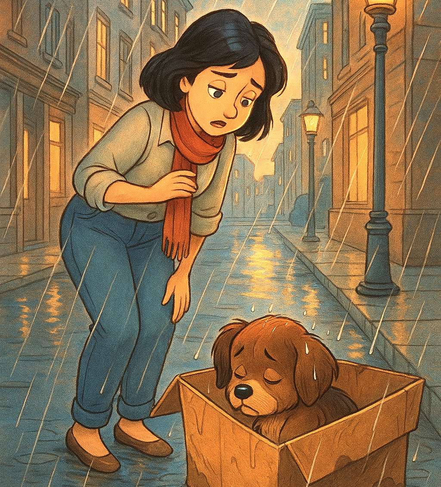

Meli encuentra una caja

En una tarde lluviosa, después de trabajar, caminando a paso rápido por la calle para evitar seguir mojándose "Meli" escuchó un gemido largo y triste que venía de una caja que había al lado de una farola. Se acercó para ver de qué se trataba, qué habría en aquella caja toda mojada y ya casi deshecha.
- Oh, que tristeza. Es un pequeño cachorrito. Es muy pequeñito, apenas si puede abrir los ojitos, está temblando de frío y quizás tendrá hambre.
- Oh, que tristeza. Es un pequeño cachorrito. Es muy pequeñito, apenas si puede abrir los ojitos, está temblando de frío y quizás tendrá hambre.
Escuchar cuento